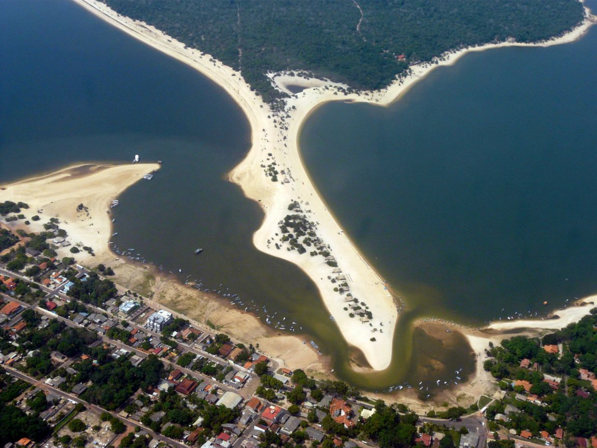
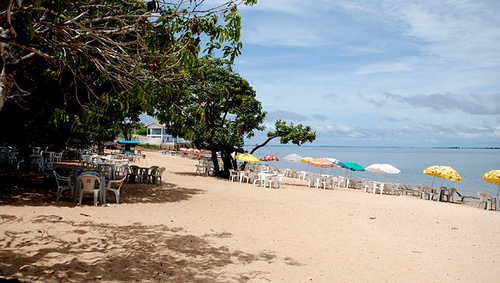
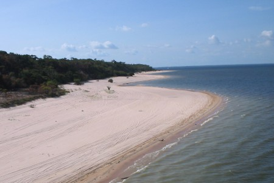

Alter do Chão
Alter do Chão é um dos distritos administrativos do município de Santarém, no estado do Pará. Localizado na margem direita do Rio Tapajós, dista do centro da cidade cerca de 37 quilômetros através da rodovia Everaldo Martins. Alter do Chão é um dos distritos administrativos do município de Santarém, no estado do Pará. Localizado na margem direita do Rio Tapajós, dista do centro da cidade cerca de 37 quilômetros através da rodovia Everaldo Martins.Alter do Chão é um dos distritos administrativos do município de Santarém, no estado do Pará. Localizado na margem direita do Rio Tapajós, dista do centro da cidade cerca de 37 quilômetros através da rodovia Everaldo Martins.Alter do Chão é um dos distritos administrativos do município de Santarém, no estado do Pará. Localizado na margem direita do Rio Tapajós, dista do centro da cidade cerca de 37 quilômetros através da rodovia Everaldo Martins.Alter do Chão é um dos distritos administrativos do município de Santarém, no estado do Pará. Localizado na margem direita do Rio Tapajós, dista do centro da cidade cerca de 37 quilômetros através da rodovia Everaldo Martins.
Praia do Maracanã
Alter do Chão é um dos distritos administrativos do município de Santarém, no estado do Pará. Localizado na margem direita do Rio Tapajós, dista do centro da cidade cerca de 37 quilômetros através da rodovia Everaldo Martins. Alter do Chão é um dos distritos administrativos do município de Santarém, no estado do Pará. Localizado na margem direita do Rio Tapajós, dista do centro da cidade cerca de 37 quilômetros através da rodovia Everaldo Martins.Alter do Chão é um dos distritos administrativos do município de Santarém, no estado do Pará. Localizado na margem direita do Rio Tapajós, dista do centro da cidade cerca de 37 quilômetros através da rodovia Everaldo Martins.Alter do Chão é um dos distritos administrativos do município de Santarém, no estado do Pará. Localizado na margem direita do Rio Tapajós, dista do centro da cidade cerca de 37 quilômetros através da rodovia Everaldo Martins.Alter do Chão é um dos distritos administrativos do município de Santarém, no estado do Pará. Localizado na margem direita do Rio Tapajós, dista do centro da cidade cerca de 37 quilômetros através da rodovia Everaldo Martins.
Praia do Pajussara
Alter do Chão é um dos distritos administrativos do município de Santarém, no estado do Pará. Localizado na margem direita do Rio Tapajós, dista do centro da cidade cerca de 37 quilômetros através da rodovia Everaldo Martins. Alter do Chão é um dos distritos administrativos do município de Santarém, no estado do Pará. Localizado na margem direita do Rio Tapajós, dista do centro da cidade cerca de 37 quilômetros através da rodovia Everaldo Martins.Alter do Chão é um dos distritos administrativos do município de Santarém, no estado do Pará. Localizado na margem direita do Rio Tapajós, dista do centro da cidade cerca de 37 quilômetros através da rodovia Everaldo Martins.Alter do Chão é um dos distritos administrativos do município de Santarém, no estado do Pará. Localizado na margem direita do Rio Tapajós, dista do centro da cidade cerca de 37 quilômetros através da rodovia Everaldo Martins.Alter do Chão é um dos distritos administrativos do município de Santarém, no estado do Pará. Localizado na margem direita do Rio Tapajós, dista do centro da cidade cerca de 37 quilômetros através da rodovia Everaldo Martins.